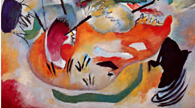

Realism
|
Still life
|
Zentangles/Mandalas
|
Illustration & cartoons
|
Abstract art
|
Pop Art
|
Watercolour
Here's some resources for "Watercolours"!
Best watercolour paint sets
Easy watercolour sunset tuturial
Pinterest- Watercolour ideas for inspiration
130 easy watercolour painting ideas
5 Simple watercolour ideas for beginners
10 things I wish I knew before getting started with watercolours
Udemy watercolour painting courses
22 Watercolour Hacks You Need to Know
20 Watercolor techniques every artist should know
7,000+ Free Watercolor and Painting Images - Pixabay
Watercolour courses online- Skillshare

Design and Paint an Inspirational Watercolor Mood Board
Musical tracks for creativity
10 artists and what music they listen to
Here's some more things that will help you on your learning journey!(click here)